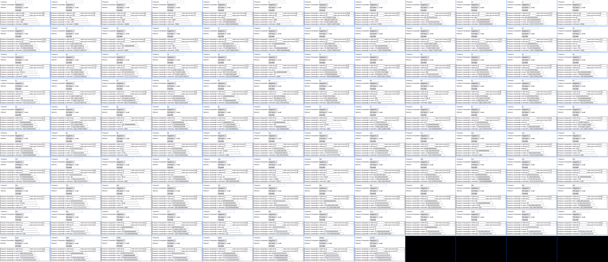
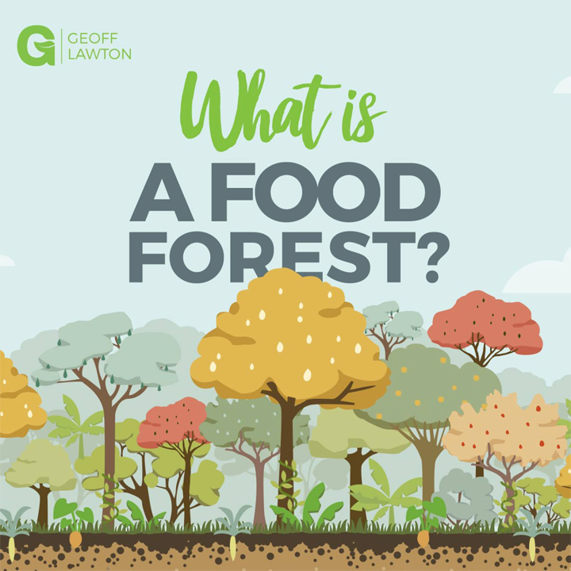
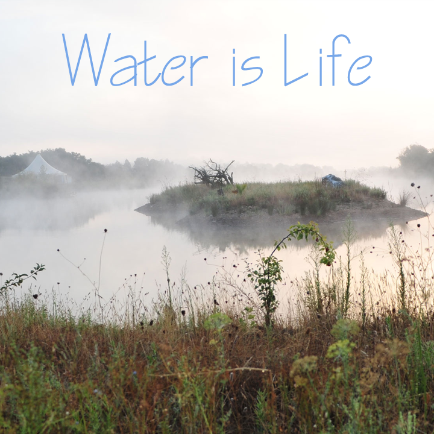
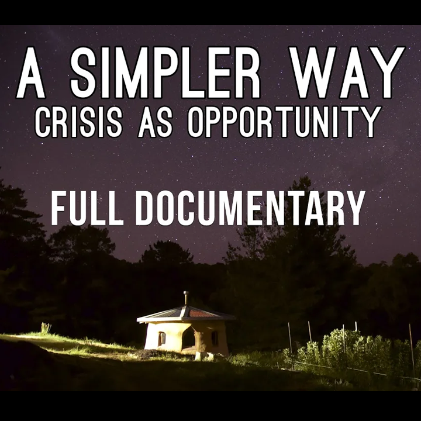
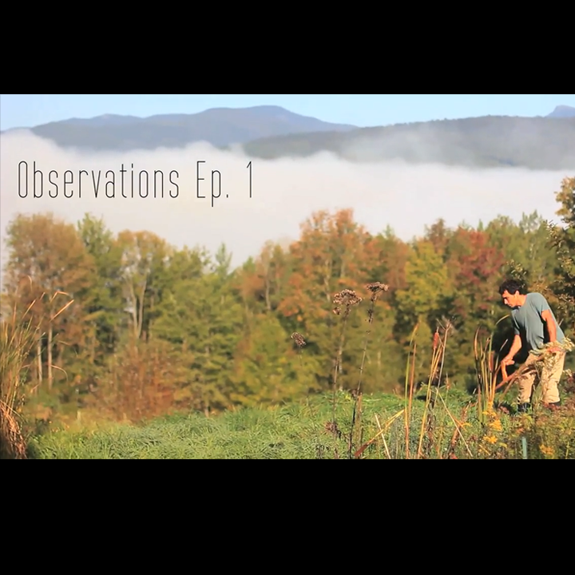
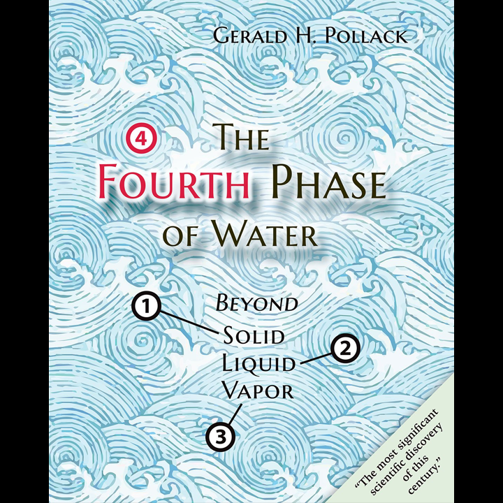
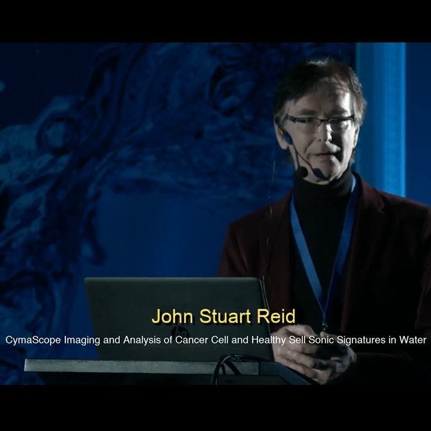
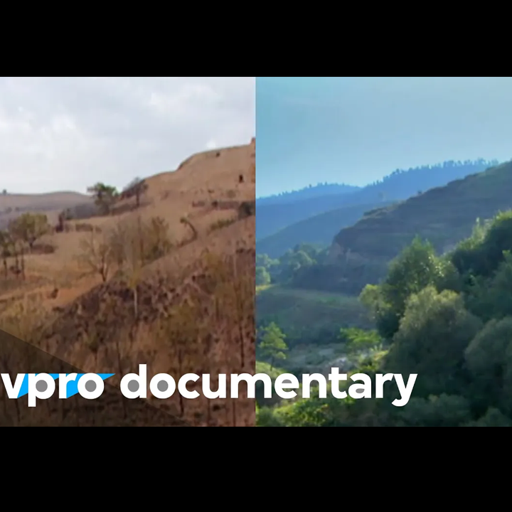

Index
Codex
Bloomhaven
References

EM Frequency to Wavelength Proportional Number Sheet
Your browser does not support the video tag.
The recent Sun at a wavelength of 193 Ångstroms (19.3 nanometers)
×
←
→
What is a Food Forest with Geoff Lawton

Water is Life - The Water Retention Landscape of Tamera

A Simpler Way: Crisis as Opportunity (2016) - Free Full Documentary

Northeast Permaculture Film Project: Observations Ep.1 - Ben Falk

India's Paani Foundation - Water Revolution Playlist
The Fourth Phase of Water: Dr. Gerald Pollack at TEDxGuelphU

John Stuart Reid: CymaScope Imaging and Analysis of Cancer Cell - Water Conference 2018

Regreening the desert with John D. Liu | VPRO Documentary | 2012
